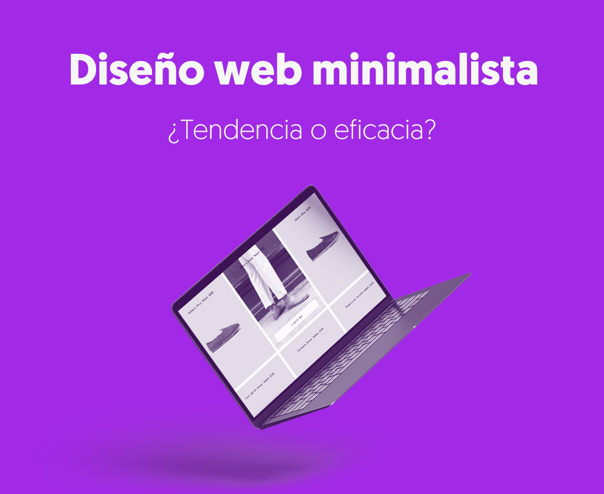
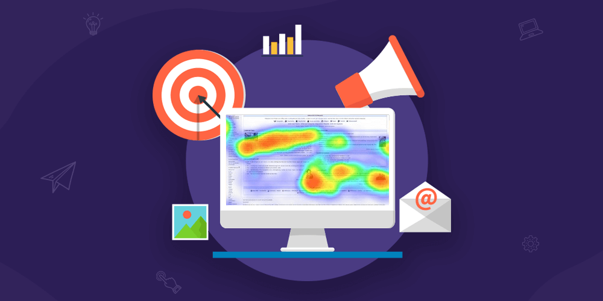
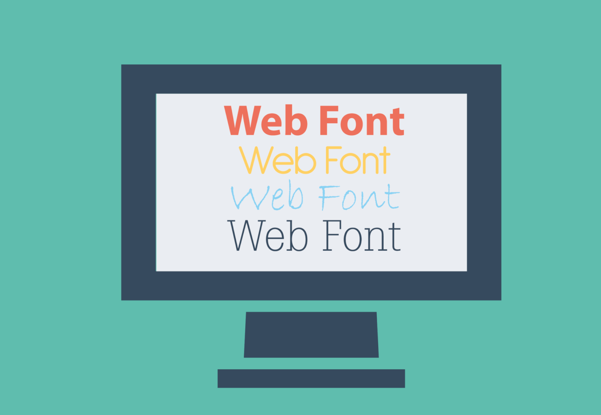

Somos una comunidad apasionada por los podcasts de diseño de interfaces web, donde tanto los podcasters novatos como los expertos pueden compartir sus historias, conocimientos y experiencias.
Únete a nosotros para descubrir nuevos podcasts, aprender de los mejores y compartir tus propias creaciones. ¡La comunidad está esperando tu voz!
¡Bienvenidos a un nuevo episodio sobre la "Psicología de los colores"; un episodio en el que abordaremos una de las temáticas más encomiables a la hora de hablar de diseño!
★★★★★ 4,8

Podcast 2
El diseño web minimalista"; Escucha nuestra charla sobre temática minimalista en el diseño de páginas web; dónde abordaremos diferentes puntos de vista!
☆☆☆☆☆ 0,0
Podcast 3
Herramientas de diseño web! Hablaremos sobre todas las herramientas más importantes en el diseño de una página web desde un punto de vista completamente profesional.
☆☆☆☆☆ 0,0

Podcast 4
En este nuevo episodio sobre los "Mapas de Calor" hablaremos sobre los diferentes tipos de mapas que se generan en nuestras webs según su tipo de layout.
☆☆☆☆☆ 0,0

Podcast 5
En este episodio sobre Tipografías Web temas relacionados con el correcto uso de ellas para una buena legibilidad manteniendo un aspecto visual moderno.
☆☆☆☆☆ 0,0
Podcast 6
Desde hace muchos años la tecnología avanza y nuestros recursos multimedia también; hablaremos sobre la evolución de dichos recursos.
☆☆☆☆☆ 0,0
FORO DE LA COMUNIDAD
Carlos Fenández:
Hola! Soy nuevo aquí. ¿Alguien puede recomendarme algunos podcasts interesantes para empezar?
Experto Podcaster:
Bienvenido, Carlos! Te recomendaría empezar con "Podcast 1 de la psicología de los colores" y "Podcast 4". Espero que los disfrutes!
Comentario Podcast 3:
¿Alguien más ha escuchado el Podcast 5? Me encantaría conocer sus opiniones sobre él.